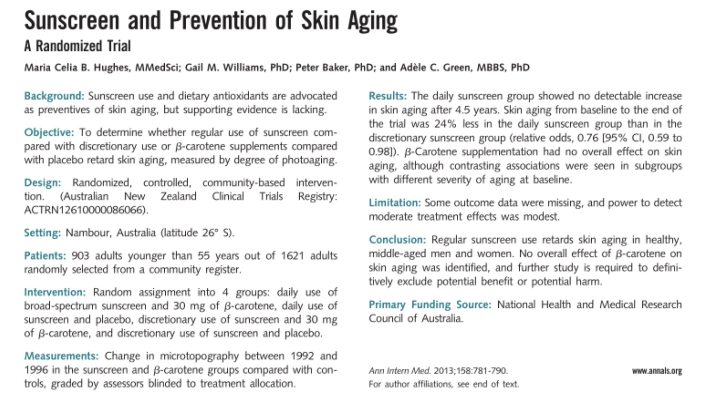

"Clinically proven." "Dermatologist tested." "Backed by science." These phrases appear on the packaging of products at every price point, from drugstore moisturizers to $300 serums. They imply rigorous testing. They imply independent verification. They imply the kind of evidence that would hold up in a medical journal.
Most of the time, they don't come close. But — and this is the part the cynics skip — some of them actually do. The problem isn't that clinical evidence in beauty is always fake. The problem is that the language used to describe weak evidence and strong evidence is identical. Here's how to read the difference.
What Makes a Clinical Trial Actually Valid

Gold-standard clinical trials require randomisation, blinding, and independent peer review — criteria most beauty studies never meet.
In medicine, a gold-standard clinical trial is randomized, double-blind, placebo-controlled, and conducted on a large enough sample to produce statistically significant results. It's published in a peer-reviewed journal, meaning independent scientists have reviewed the methodology before it goes public. The researchers have no financial stake in the outcome.
Almost none of the "clinical studies" cited in beauty marketing meet these criteria. That doesn't automatically mean the product doesn't work — but it does mean the evidence is far weaker than the language implies.
The Red Flags — Studies That Fail Scrutiny

A study of 22 women cannot reliably detect whether an effect is real or random variation.
Red Flag 1
Small sample sizes with no control group
Fails Basic Scrutiny"In a study of 22 women..." is a phrase that should immediately lower your confidence in what follows. Studies with fewer than 100 participants are underpowered — they can't reliably detect whether an effect is real or random variation. Without a control group (people using a placebo), there's no way to separate the product's effect from the placebo effect, seasonal skin changes, or the fact that people who enroll in skincare studies tend to take better care of their skin generally.
A 2019 analysis of cosmetic clinical studies found that the median sample size was 33 participants. For context, most pharmaceutical trials require hundreds to thousands of participants to reach statistical significance.
Red Flag 2
"Consumer perception" studies
Not a Clinical Trial"93% of women said their skin felt more hydrated." This is a consumer perception study — participants self-report how their skin feels. It is not a clinical measurement. It tells you that people who used the product and were asked if it worked said yes. This is not surprising. It is also not science.
Self-reported outcomes are subject to expectation bias, social desirability bias, and the simple fact that people who buy a $90 serum are motivated to believe it works. Brands use this language because it sounds like data. It isn't.
Red Flag 3
Brand-funded studies with no independent replication
Treat With CautionIndustry-funded research isn't automatically invalid — pharmaceutical companies fund most drug trials too. But in beauty, brand-funded studies are rarely published in peer-reviewed journals, rarely replicated by independent researchers, and rarely have their raw data made available for scrutiny. When a brand says "clinically proven" and the only study is one they commissioned and haven't published, the claim is essentially unverifiable.
The standard to look for: has the study been published in a peer-reviewed journal? Has it been replicated? Is the full methodology available? If the answer to all three is no, the evidence is weak regardless of how it's described.
The Studies That Actually Hold Up

The 2013 sunscreen RCT — 900 participants, four years, randomised — is the standard the rest of the industry rarely reaches.
Passes Scrutiny
Retinoids (tretinoin, retinol)
Strong EvidenceRetinoids are the most evidence-backed topical skincare ingredient that exists. Tretinoin has been studied in randomized controlled trials since the 1980s. The evidence for its effects on fine lines, skin texture, and hyperpigmentation is published across dozens of independent, peer-reviewed studies. It is the rare case where the marketing claim — "reduces wrinkles" — is supported by the kind of evidence that would satisfy a medical journal editor.
Passes Scrutiny
Niacinamide for hyperpigmentation and barrier function
Strong EvidenceNiacinamide (vitamin B3) has a substantial body of independent research behind it. Multiple randomized controlled trials — including studies not funded by cosmetic brands — have demonstrated its effects on skin barrier function, sebum regulation, and hyperpigmentation. It's one of the few over-the-counter ingredients where the evidence base is genuinely robust.
Passes Scrutiny
Sunscreen (SPF) for photoaging prevention
Very Strong EvidenceThe evidence that UV exposure causes skin aging and that sunscreen prevents it is not in question. A landmark 2013 randomized controlled trial published in Annals of Internal Medicine followed 900 adults over four years and found that daily sunscreen use measurably reduced skin aging compared to discretionary use. This is the standard of evidence the rest of the industry aspires to and rarely reaches.
How to Read a Beauty Claim
When a brand says "clinically proven," ask:
- How many participants? (Under 100 is a red flag)
- Was there a control group?
- Was it double-blind?
- Was it published in a peer-reviewed journal?
- Who funded it?
- Has it been independently replicated?
Most beauty brands won't answer these questions because the answers would undermine the claim. The ones with genuinely strong evidence — retinoids, niacinamide, sunscreen — don't need to hide the methodology. The science speaks for itself.
The goal isn't to dismiss all beauty science. It's to read it the same way you'd read any other claim: with the questions that separate evidence from marketing.